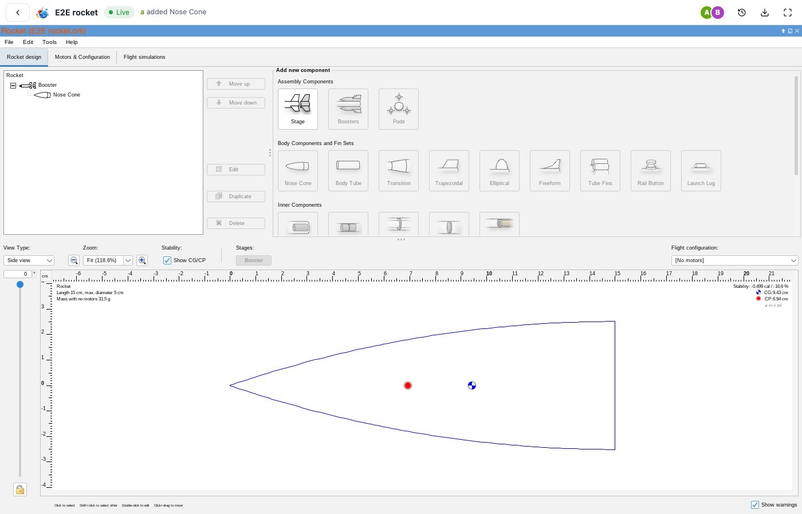
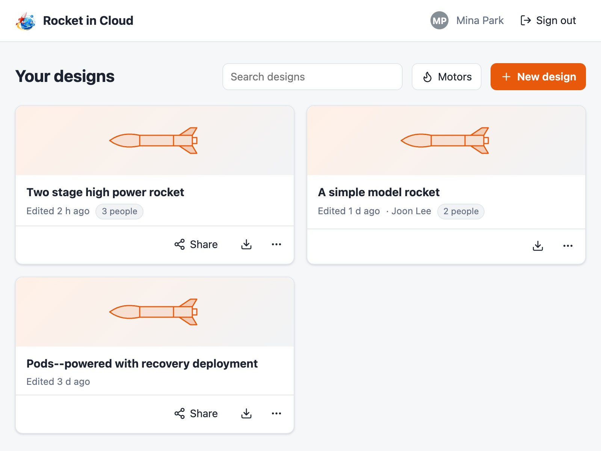
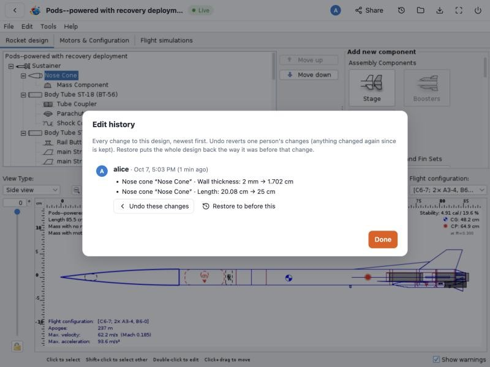
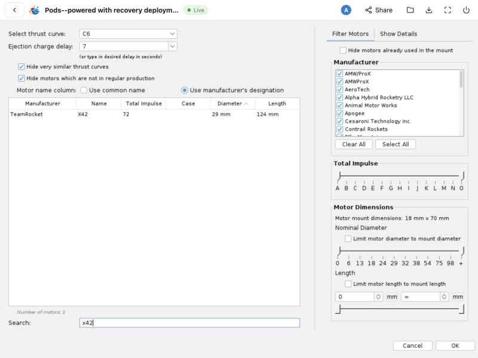

OpenRocket, multiplayer, in the browser.
Rocket in Cloud runs the official OpenRocket 24.12 rocket simulator inside a web browser and lets a team edit one rocket design together in real time. This page is a short guide to how it is built and where things live in the code.

Person B's browser, a few seconds after person A added a nose cone in theirs. Both are running the real OpenRocket, each in their own browser.
How it works
OpenRocket is a Java desktop program. Here it runs unchanged inside each person's browser, and a small add-on keeps everyone's copy of the design in sync through a shared room on the server.
In each browser
The official OpenRocket jar, run by CheerpJ (a Java virtual machine compiled to WebAssembly).
- A live-share bridge in the same Java process watches OpenRocket's own change events and applies other people's edits.
- The web page carries the bridge's messages to and from the room.
On Base44
One design room per design (a Base44 actor, a Cloudflare Durable Object underneath).
- Puts everyone's edits in one order, merges them and stores the design.
- Keeps the edit history, saved copies, who is online and what they selected.
- Base44 also hosts the site, Google sign-in, and the design and motor records.
Edits are small
The bridge sends one changed property at a time (“nose cone length is now 14 cm”), not the whole file. Two people editing different things never clash; for the same field, the later edit wins.
OpenRocket stays in charge
Remote edits are applied with the same setters OpenRocket's file loader uses, so the physics, the windows and the results are OpenRocket's own. Dialogs you have open stay open.
Two ways to run it
The same bridge and room logic also run as a self-hosted Docker version, where each person gets OpenRocket on a server, streamed to their browser with noVNC.
Code tour
Where to look first. The README covers building, deploying and configuration.
| Path | What is there |
|---|---|
worker/bridge/src | The live-share bridge (Java, no dependencies besides OpenRocket). Bridge.java turns OpenRocket's change events into edits and applies incoming ones; Model.java is the design as a set of objects with ordered children; OrDoc.java holds everything that touches OpenRocket internals. |
worker/bridge/web | The browser start-up: WebMain.java, BrowserLink.java (the bridge's connection, via JavaScript natives), and the fixes that make OpenRocket run under CheerpJ. |
web/base44/actors/DesignRoom | The design room: ordering and merging edits, storage in size-limited pieces, edit history with undo and restore, saved copies, presence. |
server/src/model.js, edits.js | The design model and edit history in JavaScript, shared by the room and the Node server. Kept identical in behaviour to Model.java (checked by parity tests). |
web/src | The dashboard and design page (plain JavaScript), starting OpenRocket in the page (java.js), and reading and writing .ork zip files in the browser (lib/). |
scripts | build-web-jars.sh builds the browser jars; slim-openrocket-jar.py removes what a browser cannot use from the official jar. |
server, worker | The self-hosted version: Node server (Express, Docker sessions, noVNC proxy, live-share hub) and the session image (official jar, Xvnc, bridge). |
| Tests | worker/bridge/test/SelfTest.java runs 237 sync checks against the real OpenRocket on all its example designs; server/test includes Java–JavaScript parity tests; web/test tests the room and runs two headless Chrome windows with the real OpenRocket editing one design. |
Engineering notes
The problems that took the most work.
Syncing a desktop app that was never built for it
OpenRocket has no collaboration features, so the bridge works from the outside. It snapshots the design with OpenRocket's own .ork writer, compares only the components OpenRocket reports as changed, and sends those properties. Incoming edits go through OpenRocket's file-loader setters in place; adding, removing or moving parts reloads the rocket the way OpenRocket's undo does. Undo reverts only your own edits, simulation results remember exactly which version of the design they were computed for, and the edit history can undo one person's change while keeping later changes by others.
Running OpenRocket 24.12 in a browser
- CheerpJ's Java 17 lacks the reflection natives behind type annotations, which OpenRocket's dependency-injection library asks for; the page supplies them (“no type annotations”).
- OpenRocket finds its plugins by scanning its own jar, which cannot run under CheerpJ; the browser build ships a plugin list computed at build time.
- Two Java threads setting up XML at the same moment failed at random, and so did loading runtime files while Java was running. Warming up XML on one thread and preloading the runtime files took fresh starts from 4 successes in 9 to 6 in 6.
- The 3D view needs OpenGL, so it uses OpenRocket's own switch for computers without 3D.
Fitting on free hosting
Base44 accepts at most 50 MB per site and the official jar is 83 MB. Most of it is the JavaScript engine behind the Scripting simulation extension plus native libraries for desktop systems, none of which can run in a browser. Removing only those gives a 42 MB jar with OpenRocket's own code untouched. CheerpJ reads it with HTTP range requests, so visitors download only the parts they use.
Keeping editing responsive
In the browser every Java thread shares one thread, and CheerpJ never switches away from a busy one. Chrome's profiler showed that OpenRocket's background flight-estimate simulation, re-run after every change, held the window for 2–3 seconds per edit. With that preference off by default (it is OpenRocket's own setting), an edit takes about 0.4 seconds; long-running simulations also pause briefly so clicks get through.
Real-time rooms on a key-value store
Each design room stores the design in 64 hashed buckets, each split into values under 96 KB, so an edit rewrites only what it touched. Messages over 400 KB (simulation results, decal images) travel in fragments, and the room handles events strictly one at a time so two edits never interleave. Locally, the same room code runs behind a plain WebSocket server for tests.
Is it really the same physics?
With the random wind seed fixed, the browser and desktop Java agree on the example rocket's apogee, velocity and flight time to 8–13 significant digits, the same level at which two desktop computers differ (Java allows math functions such as sine to differ in the last digit). Mass and centre of gravity match bit for bit.
Screens
The dashboard and dialogs around OpenRocket.



.eng and .rse files shared with the team.